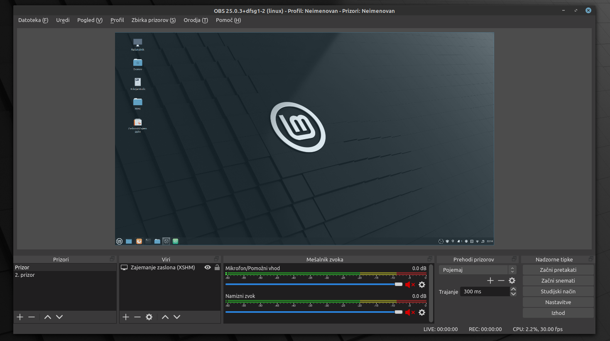
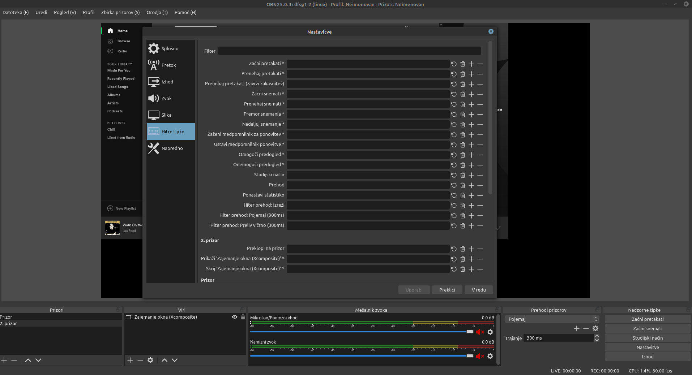

Open Broadcaster Software
Zadnji program, ki si ga bomo ogledali kot orodje za snemanje zaslona je OBS oziroma Open Broadcaster Software. Tako kot Kazam je tudi za program odprto kodni, njegova prednost pred ostalima dvema je med drugim tudi dostopnost, saj je tako brezplačen kot tudi podprt na vseh večjih operacijskih sistemih. Med drugim ga sponzorirajo tudi internetni velikani kot so YouTube, twitch, Facebook in drugi.
Slika 19: Zajem zaslona s OBS

Vir: vimany. How to live stream with OBS (Open Broadcaster Software. Pridobljeno s
http://www.vimany.com/how-to-live-stream-with-obs-open-broadcaster-software/ dne 21.1.2021
Sam program je na področju snemanja zaslona veliko naprednejši kot prej omenjena programa, saj ima večjo zalogo funkcij, ki jih lahko uporabimo.
Vsi prej omenjeni programi so snemali zgolj en prizor, medtem ko lahko v programu OBS ustvarimo več različnih prizorov, katerim vsakemu posebej določimo iz katerega vira naj snema. To storimo preprosto s klikom na + v levem desnem koncu okvira Prizori, nato pa v sosednjem okviru izberemo vir ki naj ga zajema. Poleg vira pa določimo še če želimo snemanje vhodnega/izhodnega zvoka. Drugi okvir z desne je namenjen nastavljanju prehodov med prizori, kar nam olajša obdelavo posnetka ter poveča estetsko vrednost. Čisto desno spodaj so nadzorne tipke, s katerimi lahko začnemo pretakanje ali snemanje, prav tako pa lahko upravljamo z nastavitvami in si delovanje programa prilagodimo po lastnih željah, kar zagotovi boljšo produktivnost našega dela.
Slika 20: OBS

Vir: Lastni
Če pozorno berete ste mogoče že ugotovili, da pri tem programu nisem omenil hitrih tipk s katerimi začnemo ali končamo snemanje, razlog za to je, da te bližnjice niso nastavljene v privzetih nastavitvah pač pa si jih lahko vsak uporabnik nastavi po svojih željah, če pod menijem nadzornih tipk izbere nastavitve in nato zavihek Hitre tipke. V oknu nastavitev najdemo nastavitve tudi za pretakanje našega snemanja, format in kvaliteto posnetka, zvoka ter še mnoge druge nastavitve, ki pa jih pri normalni uporabi ne potrebujemo.
Slika 21: OBS nastavitve

Vir: Lastni
Sedaj ko vemo kako se nastavi prizor je vredno omeniti kako jih uporabiti za izboljšanje kvalitete zaslonskega videoposnetka. Pri PowerPoint-u in Kazam-u je menjanje oken vidno gledalcu, če del posnetka v katerem menjamo okna izrežemo pa nastane opazen preskok. Oboje lahko zmoti učenca pri učenju. OBS nam zato omogoča prehajanje med prizori, ki so obogateni z animacijami, poleg tega pa videoposnetek teče dalje.
Primer uporabe: Profesor v srednji šoli uči dijake zanke v programiranju. Snov jim bo posredoval z zaslonskim videoposnetkom. Ker ima na voljo dva monitorja se je odločil da bo imel na enem monitorju odprte prosojnice s snovjo na drugem monitorju pa integrirano razvojno okolje. Na težavo naleti, ko ugotovi, da bo moral posneti dva zaslonska videoposnetka, prvega, kjer bo predstavil prosojnice in drugega kjer bo kazal primere v IDE, nato pa bo potrebno ta dva videoposnetka pravilno urediti in kombinirati dele med seboj. Namesto tega se odloči za program OBS in ustvari za vsako odprto okno svoj prizor, med katerimi lahko nato preklaplja med samim snemanjem, kar pa je še bolj pomembno je da tako ne prekinja svoje razlage, celotno podajanje snovi pa že bolj spominja na tistega v učilnici.Kot ste do sedaj verjetno že ugotovili je OBS za uporabo zahtevnejši progam, ki od uporabnika zahteva več časa za samo pripravo, vendar pa se to obrestuje pri obdelavi.